pacman::p_load(afex,
dplyr,
effectsize,
emmeans,
flextable,
ggplot2,
ggpubr,
ggsci,
knitr,
lmtest,
nlme,
readxl,
rstatix,
tidyr)16 Anova de Medidas Repetidas
16.1 Pacotes usados neste capítulo
16.2 Introdução
A ANOVA de medidas repetidas (Repeated Measures ANOVA) é uma técnica estatística usada quando o mesmo grupo de participantes é medido várias vezes, seja ao longo do tempo ou sob diferentes condições. Ela é ideal para dados longitudinais ou experimentos intra-sujeitos, onde cada sujeito serve como seu próprio controle. São exemplos típicos:
• Medir a qualidade de vida de crianças asmáticas em vários momentos para avaliar o impacto de um programa de atenção ao asmático;
• Testar tempos de reação em um teste em três tempos em um mesmo grupo;
• Testar a autoestima de um mesmo grupo após a introdução de um tipo especial de dieta.
A Tabela 16.1 mostra algumas diferenças importantes entre a ANOVA e a ANOVA de Medidas Repetidas:
Característica | ANOVA (entre sujeitos) | ANOVA de Medidas Repetidas (intra-sujeitos) |
|---|---|---|
Tipo de Amostra | Grupos independentes | Mesmos sujeitos em diferentes condições |
Controle da variabilidade individual | Não controla | Controla (cada sujeito é seu próprio controle) |
Sensibilidade estatística | Menor | Maior (reduz o erro residual) |
Suposição de esfericidade | Não se aplica | Necessária (testada com o teste de Mauchly) |
A ANOVA de medidas repetidas é mais poderosa estatisticamente porque reduz a variabilidade entre sujeitos, focando nas mudanças dentro de cada indivíduo. A ANOVA de medidas repetidas pode ser entendida como uma expansão da ANOVA ((1)).
16.3 ANOVA de medidas repetidas unifatorial
A ANOVA de medidas repetidas de um fator é um teste estatístico que compara as médias de três ou mais grupos relacionados, onde os mesmos participantes são medidos repetidamente em diferentes momentos ou condições para avaliar a mudança em uma variável dependente. É uma extensão do teste t pareado para mais de dois grupos e, por avaliar o mesmo grupo ao longo do tempo, controla diferenças individuais.
16.3.1 Dados usados no exemplo
Cenário do exemplo
Um estudo, realizado em um ambulatório de Doenças Respiratórias Pediátricas, avaliou a função pulmonar de um grupo de crianças por um período de 3 meses (0, 45 dias, 90 dias) usando um novo corticoide inalatório. Todas as crianças tinham idade entre 7 e 15 anos e a medida avaliadora foi PFE (Pico de Fluxo Expiratório) ou Peak Flow Meter (PFM), taxa máxima de ar expelida pelos pulmões durante uma expiração forçada), indicador importante da função pulmonar, especialmente no monitoramento de asma.
Os dados podem ser obtidos aqui. Baixe no seu diretório de trabalho e carregue com a função read_excel() do pacote readxl. Na ANOVA de medidas repetidas de um fator, será usado apenas o grupo, denominado de caso, que usou o medicamento testado.
dados_uni <- readxl::read_excel("dados/dadosAsma.xlsx") %>%
filter(grupo == "caso")
str(dados_uni)tibble [41 × 5] (S3: tbl_df/tbl/data.frame)
$ id : num [1:41] 1 2 3 4 5 6 7 8 9 10 ...
$ grupo: chr [1:41] "caso" "caso" "caso" "caso" ...
$ t0 : num [1:41] 170 100 160 180 250 180 170 180 240 200 ...
$ t1 : num [1:41] 180 140 180 180 300 200 180 200 320 200 ...
$ t2 : num [1:41] 220 100 220 250 240 280 220 250 350 250 ...16.3.1.1 Exploração e transformação dos dados
Observando a saída da função str(), verifica-se os dados se encontram no formato amplo (a variável tempo está colocada em três colunas, t0, t1, t2) e a ANOVA de medidas repetidas necessita de que os dados estejam no formato longo. Isso significa que, ao invés de ter cada medida repetida em uma coluna separada, haverá uma coluna para o identificador (id) do indivíduo, uma coluna para o tempo/condição (fator de medidas repetidas), e uma coluna para o valor da variável dependente (VD = escores).
Para fazer esta transformação será realizada pela função pivot_longer()1do pacote tidyr (2). Nesta função, no argumento data, coloca-se o nome do conjunto de dados; em cols, há necessidade informar as colunas do formato amplo que serão reunidas. No argumento names_to, nomear a coluna que conterá as colunas unificadas e em values_to, especificar o nome da variável no formato longo que conterá os valores. A variável id e a nova variável tempo devem ser convertida para fatores e o novo conjunto de dados será atribuído a um objeto nomeado dadosL_uni:
dadosL_uni <- dados_uni %>%
tidyr::pivot_longer(cols = c(t0, t1, t2),
names_to = "tempo",
values_to = "escores") %>%
convert_as_factor(id, tempo)
str(dadosL_uni)tibble [123 × 4] (S3: tbl_df/tbl/data.frame)
$ id : Factor w/ 41 levels "1","2","3","4",..: 1 1 1 2 2 2 3 3 3 4 ...
$ grupo : chr [1:123] "caso" "caso" "caso" "caso" ...
$ tempo : Factor w/ 3 levels "t0","t1","t2": 1 2 3 1 2 3 1 2 3 1 ...
$ escores: num [1:123] 170 180 220 100 140 100 160 180 220 180 ...16.3.1.2 Sumarização dos dados
Serão calculadas algumas estatísticas resumidas dos escores espirométricos por grupos (tempo): média e desvio padrão, usando a funções group_by() e summarise() do pacote dplyr:
resumo <- dadosL_uni %>%
dplyr::group_by(tempo) %>%
dplyr::summarise(n = n(),
média = mean(escores, na.rm =TRUE),
dp = sd(escores, na.rm = TRUE))
resumo# A tibble: 3 × 4
tempo n média dp
<fct> <int> <dbl> <dbl>
1 t0 41 174. 42.8
2 t1 41 205. 53.2
3 t2 41 229. 56.1O resumo mostra que a média aumenta do momento inícial (t0) para o final (t2).
16.3.1.3 Visualização dos dados
A visualização pode ser obtida com um conjunto de boxplots (Figura 16.1), usando o pacote ggpubr com a função ggboxplot(). Este gráfico permite visualizar a variação dos escores com o tempo e a variabilidade em cada um dos momentos.
ggpubr::ggboxplot (dadosL_uni,
bxp.errorbar = TRUE,
bxp.errorbar.width = 0.1,
x = "tempo",
y = "escores",
color = "black",
fill = "lightblue",
ylab = "Pico de Fluxo Expiratório (l/min)",
xlab = "Tempo",
outliers = TRUE,
ggtheme = theme_classic(),
legend = "none") +
theme (text = element_text (size = 12))
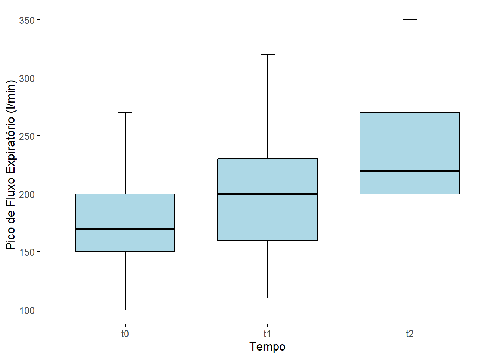
Outra maneira de obter praticamente as mesmas informações visuais é através de um gráfico de linha (Figura 16.2) que mostra bem o comportamento dos escores com o tempo e em cada momento:
ggpubr::ggline(dadosL_uni,
x = "tempo",
y = "escores",
color = "gray60",
add.params = list(color = "steelblue"),
linewidth = 1,
linetype = "dashed",
add = c("mean_ci"),
point.size = 1.5,
point.color = "red",
ggtheme = theme_classic()) +
ylab("Pico de Fluxo Expiratório (l/min)") +
xlab("Tempo")
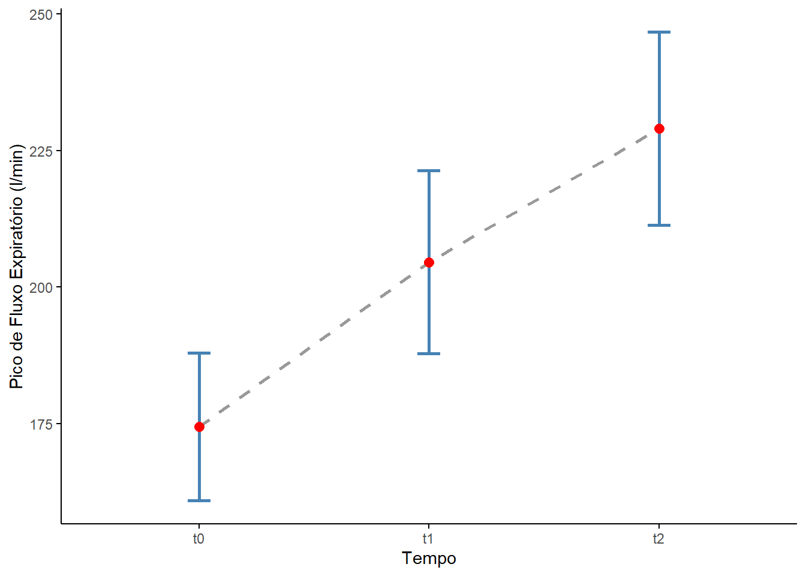
Ambas as figuras exibem uma modificação dos escores espirométricos (melhora nitidamente!) à medida que o tempo passa, utilizando a medicação.
16.3.2 Criação do modelo de ajuste
Para criar o modelo da ANOVA de medidas repetidas pode-se usar a função aov_car() pacote afex que fornece uma abordagem de alta robustez estatística e libera o teste de Mauchly com as correções de esfericidade.
Estrutura do modelo aov_car
aov_car(valor ~ fator + Error(sujeito/fator), data = dados)Onde,
data: dataframe no fornato longo
fórmula: que deve incluir
valor = variável dependente;
fator = variável independente (fator de medidas repetidas);
sujeito = variável que identifique o indivíduo, para um modelo de medidas repetidas de um fator - Error(id/tempo)
O termo
Error(id/tempo)é a chave para a análise de variância de medidas repetidas. É para o R entender que se usará um delineamento de medidas repetidas. Ele não é uma função, mas sim um símbolo de estrutura dentro da fórmula doaov(). Lê-se: “Erro aninhado emiddentro do tempo”. Este termo instrui ao R para decompor a variabilidade total do modelo em partes específicas, isolando a variância que é realmente do efeito do tratamento (tempo) que é apenas devida às diferenças individuais (id).
Portanto, no exemplo em estudo, a sintaxe para o ajuste do modelo é:
modelo_aov <- aov_car(escores ~ tempo + Error(id/tempo), data = dadosL_uni)Esse comando cria um objeto modelo.aov 2 que contém os resultados da ANOVA de medidas repetidas (tabela da ANOVA do tipo III) e outras informações, como o teste de Mauchly.
Para ver a partição da variância e o teste F, usa-se a função summary():
summary(modelo_aov)Warning in summary.Anova.mlm(object$Anova, multivariate = FALSE): HF eps > 1
treated as 1
Univariate Type III Repeated-Measures ANOVA Assuming Sphericity
Sum Sq num Df Error SS den Df F value Pr(>F)
(Intercept) 5052075 1 250720 40 806.011 < 2.2e-16 ***
tempo 61417 2 61853 80 39.718 1.047e-12 ***
---
Signif. codes: 0 '***' 0.001 '**' 0.01 '*' 0.05 '.' 0.1 ' ' 1
Mauchly Tests for Sphericity
Test statistic p-value
tempo 0.97503 0.6107
Greenhouse-Geisser and Huynh-Feldt Corrections
for Departure from Sphericity
GG eps Pr(>F[GG])
tempo 0.97564 1.879e-12 ***
---
Signif. codes: 0 '***' 0.001 '**' 0.01 '*' 0.05 '.' 0.1 ' ' 1
HF eps Pr(>F[HF])
tempo 1.025029 1.047466e-12A saída do modelo mostra a Tabela da ANOVA de Medidas repetidas de um fator (tempo) e resume os resultados do teste de esfericidade de Mauchly e as correções de Greenhouse-Geisser (GG) e Huynh-Feldt (HF).
O teste de Mauchly avalia a suposição de esfericidade, que é o pressuposto de que as variâncias das diferenças entre todos os pares de níveis de repetição (os três momentos de medição) são iguais. Como o valor p = 0,6107 não se rejeita a H0 e se conclui que a esfericidade é válida e podemos confiar nos resultados da ANOVA univariada tipo III sem necessidade de correção. As correções de Greenhouse-Geisser e Huynh-Feldt confirmam a forte significância do efeito de tempo , entretanto, embora apresentadas, não são estritamente necessárias neste caso (veja mais sobre esfericidade na Seção 16.3.3.4).
A tabela principal da ANOVA univariada Tipo III, assumindo esfericidade, testa a hipótese nula de que não há diferença entre as médias das medições do PFE nos três momentos de tempo.
O intercepto doi significativo (p\(< 2,2 \times 10^-16\)), indicando que média geral é significativamente diferente de zero. Este resultado não é importante para o efeito do tratamento.
O efeito do tempo foi significativo (F = 39,72; p \(= 1,047 \times 10^-12\)), o que significa rejeitar a H0 de igualdade das médias através do tempo. O F é igual QMtempo/QM~residuo ou erro~.
O Quadrado Médio(QM) é obtido dividindo a Soma dos Quadrados(SQ) pelos respectivos graus de liberdade (gl) e F pela razão entre os quadrados médios(variâncias):
\[QM_{tempo} = \frac{SQ_{tempo}}{gl_{tempo}}\]
\[QM_{erro} = \frac{SQ_{erro}}{gl_{erro}}\]
\[F = \frac{QM_{tempo}}{QM_{erro}}\]
A Tabela da ANOVA pode ser resumida coma a Tabela 16.2.
Fonte de Variação | Soma dos Quadrados | gl | Quadrado Médio | F | Valor p |
|---|---|---|---|---|---|
tempo | 61.417 | 2 | 30.708,500 | 39,718 | < 0.0001 |
resíduo | 61.853 | 80 | 773,162 |
Existe uma diferença estatisticamente significativa nas medições de Peak Flow Meter das crianças asmáticas ao longo dos três momentos distintos (0, 45 e 90 dias). Isto apenas indica que pelo menos dois momentos são diferentes, haverá necessidade de realizar testes post hoc.
16.3.3 Avaliação dos pressupostos
A ANOVA de Medidas Repetidas Unifatorial possui três pressupostos importantes e dois deles são avaliados diretamente a partir dos resíduos do modelo:
- Normalidade dos Resíduos
- Ausência de valores atípicos
- Esfericidade (pressuposto exclusivo para medidas repetidas e é avaliado nas diferenças entre as medidas, não diretamente nos resíduos do modelo, mas é fundamental).
16.3.3.1 Obtenção dos resíduos e valores ajustados
Para a avaliação dos pressupostos há necessidade de obter os resíduos do modelo. Os resíduos correspondem a diferença entre os valores observados e os valores ajustados (fitted values) pelo modelo. Esses valores podem ser extraídos com a função residuals() e a função fitted() a partir do modelo. Para a avaliação dos pressupostos sera ajustado um modelo com a função lme() do pacote nlme, pois ele fornece resíduos menos dispersos, mais realistas e considera a estrutura de correlação entre medidas (3) (4).
Estrutura do modelo lme
O modelo_lme deve incluir o seguinte:
modelo_lme <- lme(
resposta ~ efeitos fixos,
random = ~ estrutura_aleatoria | unidade_agrgadora,
correlation = estrutura_correlacao,
data = dataframe)- Parte fixa, representada pela fórmula: No exemplo,
escores ~ grupo * tempo. Esta fórmula modela os escores como função dos efeitos principais degrupoetempo, mais a interação entre eles. Isso responde como os escores variam entre grupos, ao longo do tempo, e se essa variação depende do grupo. Na ANOVA de medidas repetidas unifatorial, o fator grupo não existe porque há apenas um grupo. Nesse caso, a fórmula fica simplificada para apenasescores ~ tempo. - Parte aleatória:
ramdom = ~1| id. Aqui se afirma que cadaid(sujeito) tem um intercepto próprio, ou seja cada indivíduo começa de um ponto diferente. Isso captura a variabilidade individual entre sujeitos. - Estrutura de correlação composta simétrica:
correlation = corCompSymm(form = ~1 | id). Isso significa que todas as observações dentro de um mesmo sujeito (id) são igualmente correlacionadas entre si, independentemente do tempo. É uma forma simples de modelar a dependência entre medidas repetidas. Este argumento não é obrigatório, mas pode melhorar o ajuste e a interpretação do modelo. Deve ser considerado se:- Os tempos são equidistantes (ex; dias, semanas);
- Há suspeita que há correlação entre as medidas dentro de cada sujeito.
- O modelo sem ele apresenta resíduos autocorrelacionados ou ajuste ruim.
- Fonte dos dados:
data = dataframe. Dados sobre o qual o modelo será ajustado. Devem estar no formato longo (cada linha é uma observação de um sujeito em um tempo).
Após o ajuste do modelo, modelo_lme, os valores residuais bem como os ajustados, serão incorporados ao dataframe dadosL_uni:
modelo_lme <- lme(
escores ~ tempo,
random = ~1 | id,
correlation = corCompSymm(form = ~1 | id),
data = dadosL_uni)
dadosL_uni$residuos <- residuals(modelo_lme)
dadosL_uni$ajustados <- fitted(modelo_lme)
str(dadosL_uni)tibble [123 × 6] (S3: tbl_df/tbl/data.frame)
$ id : Factor w/ 41 levels "1","2","3","4",..: 1 1 1 2 2 2 3 3 3 4 ...
$ grupo : chr [1:123] "caso" "caso" "caso" "caso" ...
$ tempo : Factor w/ 3 levels "t0","t1","t2": 1 2 3 1 2 3 1 2 3 1 ...
$ escores : num [1:123] 170 180 220 100 140 100 160 180 220 180 ...
$ residuos : Named num [1:123] 6.71 -13.48 2.08 3.92 13.73 ...
..- attr(*, "names")= chr [1:123] "1" "1" "1" "2" ...
..- attr(*, "label")= chr "Residuals"
$ ajustados: Named num [1:123] 163.3 193.5 217.9 96.1 126.3 ...
..- attr(*, "names")= chr [1:123] "1" "1" "1" "2" ...
..- attr(*, "label")= chr "Fitted values"16.3.3.2 Normalidade dos resíduos
A suposição de normalidade dos resíduos é fundamental para a validade dos testes estatísticos em modelos lineares. Em modelos com medidas repetidas, essa suposição pode variar ao longo dos diferentes momentos de avaliação. Para verificar essa condição, será aplicado o teste de Shapiro-Wilk, usando a função shapiro_test() do pacote rstatix e gerados gráficos QQ dos resíduos por tempo (t0, t1, t2), com o ggplot2.
dadosL_uni %>%
group_by(tempo) %>%
shapiro_test(residuos)# A tibble: 3 × 4
tempo variable statistic p
<fct> <chr> <dbl> <dbl>
1 t0 residuos 0.895 0.00118
2 t1 residuos 0.962 0.186
3 t2 residuos 0.982 0.740 É interessante complementar essa avaliação formal com a construção, de um gráfico QQ:
ggplot(dadosL_uni,
aes(sample = residuos,
color = tempo)) +
stat_qq() +
stat_qq_line() +
facet_wrap(~ tempo) +
labs(
title = "QQ Plot dos Resíduos por Tempo",
x = "Quantis Teóricos",
y = "Quantis dos Resíduos"
) +
theme_bw() +
theme(legend.position = "none")
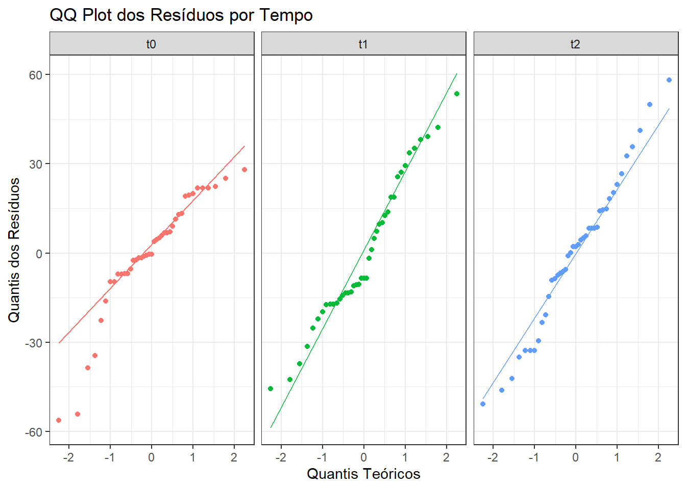
Os gráficos QQ (Figura 16.3) revelaram que os resíduos nos tempos t1 e t2 estão bem alinhados à linha teórica, indicando distribuição aproximadamente normal. Já no tempo t0, observou-se maior dispersão nas extremidades, sugerindo violação da normalidade. Essa observação foi confirmada pelo teste de Shapiro-Wilk.
Os resíduos do tempo t0 apresentaram distribuição significativamente diferente da normal (p < 0,05), enquanto os tempos t1 e t2 não rejeitaram a hipótese de normalidade. Essa variação pode refletir maior heterogeneidade basal ou instabilidade clínica inicial. Recomenda-se, portanto, que a avaliação da normalidade dos resíduos em modelos com medidas repetidas seja feita por tempo, e não de forma agregada, para garantir maior precisão na interpretação dos pressupostos.
Mesmo com resíduos não normalmente distribuídos em t0, o modelo permanece válido desde que a esfericidade seja assumida; que o modelo tenha sido ajustado com lme() ou aov_car() com estrutura de erro adequada e que os resíduos nos demais tempos estejam dentro dos padrões esperados (4) (5).
16.3.3.3 Identificação de valores atípicos
Não deve haver valores atípicos extremos nos resíduos. Pode-se verificar a presença de valores atípicos, usando a função identify_outliers() do pacote rstatix.
dadosL_uni %>%
dplyr::group_by(tempo) %>%
rstatix::identify_outliers(residuos)# A tibble: 3 × 8
tempo id grupo escores residuos ajustados is.outlier is.extreme
<fct> <fct> <chr> <dbl> <dbl> <dbl> <lgl> <lgl>
1 t0 13 caso 150 -54.2 204. TRUE FALSE
2 t0 26 caso 110 -56.2 166. TRUE FALSE
3 t0 30 caso 200 -38.7 239. TRUE FALSE A saída mostra a presença de três de valores atípicos, todos no momento t0. Nenhum é outlier extremo. Isso também pode ser verificado na Figura 16.4 dos boxplots.
ggpubr::ggboxplot (dadosL_uni,
bxp.errorbar = TRUE,
bxp.errorbar.width = 0.1,
x = "tempo",
y = "residuos",
color = "black",
fill = "lightblue",
ylab = "Pico de Fluxo Expiratório (l/min)",
xlab = "Tempo",
outliers = TRUE,
ggtheme = theme_classic(),
legend = "none") +
theme (text = element_text (size = 12))
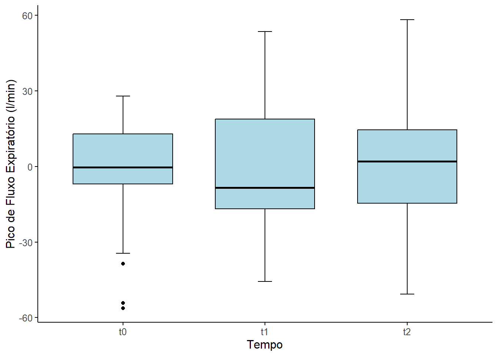
16.3.3.4 Teste de esfericidade
A esfericidade é a versão da homocedasticidade para medidas repetidas, é avaliada como foi visto (Seção 16.3.2) pelo teste de Mauchly. O teste de Mauchly é uma avaliação da matriz de covariância das diferenças entre os níveis do fator. A matriz de covariância é a ferramenta que avalia se a variação nas mudanças ao longo do tempo é consistente. O teste de Mauchly podes ser obtido ajustando o modelo unifatorial de medidas repetidas (tempo), usando a função aov_car() do pacote afex . A saída do teste de Mauchly exibiu um valor p$ > 0,05$, indicando que o pressuposto da esfericidade não foi violado, não havendo necessidade de recorrer às correções da esfericidade, que seriam obtidas da seguinte maneira:
Lógica do teste de Mauchly
O teste de Mauchly é uma avaliação da matriz de covariância das diferenças entre os níveis do fator. O que isto significa?
O exemplo usado na ANOVA de medidas repetidas corresponde a medida de Pico de Fluxo Expiratório (PFE) em três momentos (t0, t1 e t3, respectivamente, basal, 45 dias e 90 dias).
Para saber se o tratamento funciona, não se está interessado apenas na medida do PFE em cada tempo, mas sim na mudança que o tratamento causou. Se quer saber se a PFE no tempo 1 é diferente da PFE no tempo 0, e se o PFE no tempo 2 é diferente do PFE nos tempos anteriores.
As “mudanças” são as diferenças entre os níveis do fator, ou seja:
- Dif 1: (t1−t0)
- Dif 2: (t2−t0)
- Dif 3: (t2−t1)
A ANOVA de medidas repetidas assume que essas diferenças têm uma relação especial entre si. Ela assume que a variância de cada uma dessas diferenças é aproximadamente a mesma e que a correlação (ou covariância) entre elas também é a mesma.
Matriz de Covariância das Diferenças
Imagine-se que se calculou a variância de cada uma dessas diferenças. A matriz de covariância das diferenças é uma tabela que organiza esses resultados em uma matriz quadrada (3 x 3) e simétrica:

A suposição de esfericidade (que o teste de Mauchly avalia) é que todos os valores nessa matriz devem ser aproximadamente iguais. • As variâncias diagonais devem ser iguais; • As covariâncias fora da diagonal também devem ser iguais.
Importância do Teste de Mauchly
O teste de Mauchly verifica se essa suposição de esfericidade é verdadeira. • Se o teste de Mauchly for não significativo (p > 0,05): Significa que a matriz das diferenças é “esférica” e a suposição de esfericidade foi mantida. Se pode confiar no resultado da ANOVA. • Se o teste de Mauchly for significativo (p < 0,05): Significa que a suposição de esfericidade foi violada. As variâncias das diferenças não são iguais, e isso pode inflar a taxa de erro do Tipo I (a chance de encontrar um resultado significativo quando não existe um de verdade).
Quando a esfericidade é violada, é calculada as correções de Greenhouse-Geisser (GGe) ou Huynh-Feldt (HFe), que ajustam os graus de liberdade e tornam o teste mais conservador, garantindo que o seu resultado final seja confiável. Huynh e Feldt (6) relataram que quando a correção \(\epsilon\) de Greenhouse-Geisser é > 0,75 muitas hipóteses nulas falsas deixam de ser rejeitadas, isto é, o teste é muito conservador, propondo outra correção dos graus de liberdade. É recomendado o uso da correção de Greenhouse-Geisser para o ajuste dos graus de liberdade quando \(\epsilon\) < 0,75 ou nada se sabe a respeito da esfericidade (7). Avaliando o poder destes testes, Muller (8) verificou que a correção de Greenhouse-Geisser fornece um controle adicional do erro Tipo I, enquanto o poder é maximizado.
16.3.4 Testes post hoc
A ANOVA de medidas repetidas indicou uma modificação significativa nos escores de PEF ao longo do tempo com o uso da medicação. No entanto, esse teste apenas revela que há diferenças entre os tempos, sem especificar entre quais pares de momentos essas diferenças ocorrem. Para identificar onde essas diferenças são estatisticamente significativas, é necessário realizar uma análise post hoc. Utilizou-se a função pairwise_t_test() do pacote rstatix, que realiza comparações múltiplas entre pares de níveis do fator tempo, aplicando testes t pareados com correção para o erro Tipo I. Optou-se pelo método de Bonferroni (p.adjust.method = "bonferroni"), por ser mais conservador e reduzir o risco de falsos positivos, mesmo que sacrifique o poder estatístico. Em contextos com muitos grupos, métodos como Holm ou Benjamini-Hochberg (BH) podem ser preferidos por sua maior sensibilidade.
pwc <- pairwise_t_test(
data = dadosL_uni,
formula = escores ~ tempo,
p.adjust.method = "bonferroni")
pwc# A tibble: 3 × 9
.y. group1 group2 n1 n2 p p.signif p.adj p.adj.signif
* <chr> <chr> <chr> <int> <int> <dbl> <chr> <dbl> <chr>
1 escores t0 t1 41 41 0.00843 ** 0.0253 *
2 escores t0 t2 41 41 0.00000379 **** 0.0000114 ****
3 escores t1 t2 41 41 0.0321 * 0.0964 ns A saída mostra os pares comparados (group1 vs group2) e os respectivos valores de p e p ajustado: • t0 vs. t1 (0 vs. 45 dias): p = 0,00843; p ajustado = 0,0253 → diferença significativa. • t0 vs. t2 (0 vs. 90 dias): p = 0,00000379; p ajustado = 0,0000114 → diferença altamente significativa. • t1 vs. t2 (45 vs. 90 dias): p = 0,0321; p ajustado = 0,0964 → diferença não significativa após correção. Esse último resultado sugere que, embora haja uma tendência de melhora entre os dias 45 e 90, ela não é estatisticamente robusta após correção de Bonferroni.
16.3.5 Tamanho do Efeito
O tamanho do efeito é uma medida da magnitude da diferença entre grupos, independente do tamanho da amostra. O tamanho do efeito na ANOVA pode ser obtido usando o parâmetro \(\eta^2\) (eta ao quadrado), parcial ou generalizado, que está disponível no pacote afex, usado para ajustar o modelo (Seção 16.3.2). Na ANOVA de medidas repetidas, é calculado o eta ao quadrado generalizado, pois o parcial pode superestimar o efeito. O eta ao quadrado generalizado mede a proporção da variância explicada por um fator em relação a variância total, incluindo a variância entre sujeitos e outros efeitos, enquanto o eta ao quadrado parcial exclui outros fatores e interações. Usando o mod_aov, o tamanho do efeito pode ser obtido da seguinte forma usando a função eta_squared() do pacote effetcsize:
effectsize::eta_squared (modelo_aov, generalized = TRUE)# Effect Size for ANOVA (Type III)
Parameter | Eta2 (generalized) | 95% CI
---------------------------------------------
tempo | 0.16 | [0.05, 1.00]
- Observed variables: All
- One-sided CIs: upper bound fixed at [1.00].De acordo com a Tabela 15.2, um eta ao quadrado igual a 0,16 pode ser considerado um grande efeito.
16.3.6 Conclusão
16.3.6.1 Análise do Impacto do Novo Corticoide
Uma ANOVA de medidas repetidas foi conduzida para avaliar o impacto do novo corticoide inalatório nos escores de Pico de Fluxo Expiratório (PFE) em pacientes de 7 a 15 anos ao longo do tempo.
O teste revelou um efeito estatisticamente significativo do tempo sobre os escores de PFE, F(2,80) = 39.7, p < 0.0001.
Para investigar onde as diferenças ocorreram, foi realizada uma análise post hoc com correção de Bonferroni. Os resultados indicaram que os escores de PFE melhoraram significativamente entre o início do estudo (t0) e o marco de 45 dias (t1), e também entre o início (t0) e o marco de 90 dias (t2). Embora tenha havido uma melhora contínua entre 45 e 90 dias, essa diferença não foi estatisticamente significativa após a correção para múltiplas comparações (p = 0.096). Esses resultados sugerem que o tratamento com o novo corticoide inalatório teve um impacto significativo na melhora dos escores de PFE, com a maior parte da mudança ocorrendo nos primeiros 45 dias.
16.3.6.2 Apresentação Visual
A Figura 16.5 ilustra a mudança nos escores de PFE ao longo do tempo.
analise_anova <- anova_test(
data = dadosL_uni,
dv = escores,
wid = id,
within = tempo)
gl <- ggpubr::ggline(dadosL_uni,
x = "tempo",
y = "escores",
color = "gray60",
add.params = list(color = "black"),
linewidth = 0.8,
linetype = "dashed",
add = "mean_ci",
point.size = 1,
point.color = "black")
gl +
ggpubr::stat_pvalue_manual(pwc,
label = "p.adj",
tip.length = 0.00,
y.position = c(245, 250, 255)) +
labs (x = "Tempo",
y = "Pico de Fluxo Expiratório (l/min)",
subtitle = get_test_label (analise_anova, detailed = TRUE),
caption = get_pwc_label(pwc))
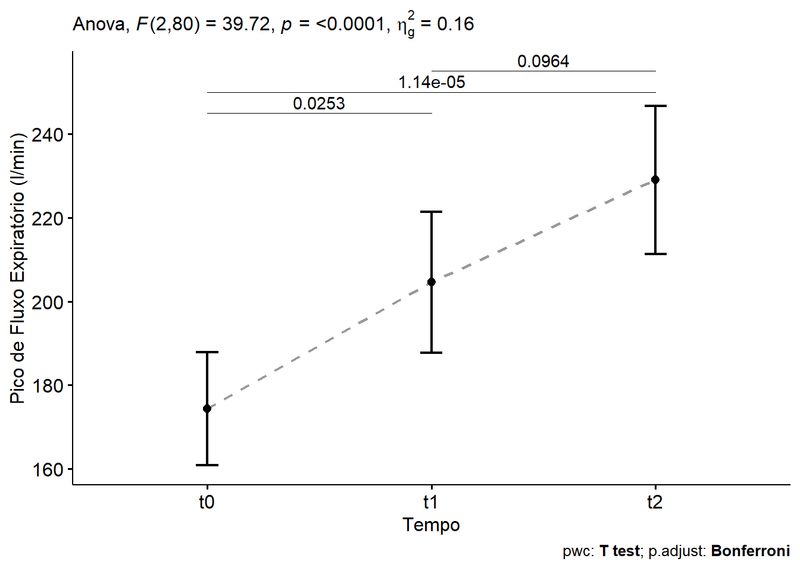
16.4 ANOVA de medidas repetidas bifatorial
A ANOVA de medidas repetidas de dois fatores é um teste estatístico usado para comparar as médias de uma variável dependente entre diferentes grupos (divididos por dois fatores) onde as mesmas amostras são medidas múltiplas vezes, seja ao longo do tempo ou sob diferentes condições. Ela avalia se há diferenças significativas entre os níveis de cada fator (os dois fatores) e, principalmente, se existe uma interação entre os dois fatores.
O estudo é organizado em torno de dois fatores (variáveis independentes). Um pode ser um fator entre sujeitos (ex: grupo de tratamento vs. grupo de controle) e outro pode ser um fator de medidas repetidas (intra-sujeitos). O principal objetivo é entender se a combinação dos dois fatores tem um efeito na variável dependente. Se uma interação for significativa, ela deve ser a prioridade na análise, pois os efeitos dos fatores isolados podem não ser tão relevantes.
16.4.1 Dados usados no exemplo
Os dados que servirão de exemplo são os mesmos da Seção 16.3.1 sem usar o filtro para os 41 casos que correspondem as crianças de 5 a 15 anos que receberam um novo corticoide inalatório. Os controle são 41 crianças da mesma idade que receberam o tratamento habitual (Figura 16.6).

dados_bi <- readxl::read_excel("dados/dadosAsma.xlsx")
str(dados_bi)tibble [82 × 5] (S3: tbl_df/tbl/data.frame)
$ id : num [1:82] 1 2 3 4 5 6 7 8 9 10 ...
$ grupo: chr [1:82] "caso" "caso" "caso" "caso" ...
$ t0 : num [1:82] 170 100 160 180 250 180 170 180 240 200 ...
$ t1 : num [1:82] 180 140 180 180 300 200 180 200 320 200 ...
$ t2 : num [1:82] 220 100 220 250 240 280 220 250 350 250 ...Assim, como realizado com a ANOVA de medidas repetidas de um fator, os dados serão transformados para o formato longo e atribuídos a um objeto denominado dadosL_bi:
dadosL_bi <- dados_bi %>%
tidyr::pivot_longer(cols = c(t0, t1, t2),
names_to = "tempo",
values_to = "escores") %>%
convert_as_factor(id, tempo)
dadosL_bi %>% sample_n_by(grupo, tempo, size = 1)# A tibble: 6 × 4
id grupo tempo escores
<fct> <chr> <fct> <dbl>
1 26 caso t0 110
2 33 caso t1 150
3 31 caso t2 190
4 60 controle t0 140
5 42 controle t1 250
6 59 controle t2 18016.4.1.1 Sumarização dos dados
Os dados serão sumarizados por grupo e tempo e, em seguida, serão calculadas algumas estatísticas resumidas da variável de escore: média e sd (desvio padrão). Isso será realizado através das funções group_by() e get_summary_stats() do pacote rstatix.
dadosL_bi %>%
rstatix::group_by(grupo, tempo) %>%
rstatix::get_summary_stats(escores, type = "mean_sd")# A tibble: 6 × 6
grupo tempo variable n mean sd
<chr> <fct> <fct> <dbl> <dbl> <dbl>
1 caso t0 escores 41 174. 42.8
2 caso t1 escores 41 205. 53.2
3 caso t2 escores 41 229. 56.1
4 controle t0 escores 41 184. 43.6
5 controle t1 escores 41 192. 37.5
6 controle t2 escores 41 212. 40.916.4.1.2 Visualização dos dados
Pode-se observar os dados de diversas maneias. Para ANOVA medidas repetidas de dois fatores, o gráfico de linha com barra de erro é bastante útil, pois além de permitir a visualização dos dados através do tempo, pode-se ver a existência ou não de interação entre os fatores. Para criar a (Figura 16.7) serão usadas as funções ggline() do pacote ggpubr.
ggpubr::ggline(dadosL_bi,
x = "tempo",
y = "escores",
color = "grupo",
palette = "d3",
linewidth = 0.7,
linetype = "dashed",
add = "mean_ci",
error.plot = "errorbar",
position = position_dodge(width = 0.3),
point.size = 1.5,
ggtheme = theme_bw()) +
ylab("Pico de Fluxo Expiratório (l/min)") +
xlab("Tempo")
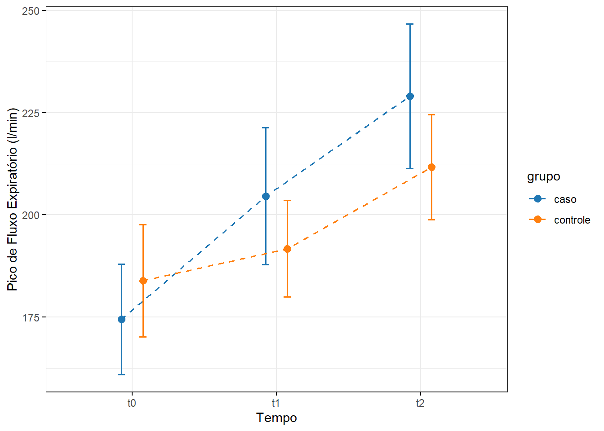
A observação da Figura 16.7 mostra que ambos os grupos melhoraram a função respiratória com o tempo. O grupo caso teve uma melhora mais acentuada, o que pode indicar que a intervenção foi eficaz. O grupo controle manteve uma evolução positiva estável. A análise estatística (como ANOVA de medidas repetidas) poderia confirmar se essas diferenças são significativas ou apenas tendências visuais.
16.4.2 Criação do modelo com dois fatores
Este modelo permite testar se há diferença no tempo, independentemente do grupo; testar se há diferença entre os grupos, independentemente do tempo e verificar se há interação entre tempo e grupo, ou seja, se a mudança ao longo do tempo difere entre os grupos (por ex., se o tratamento teve efeito). Usando o formato longo, pode-se fazer o ajuste do modelo com a função aov_car() do pacote afex ((aov_car?)). Essa função também é apropriada para delineamentos com mais de um fatores: um fator intra-sujeitos (tempo); um fator entre sujeitos (grupo) e, principalmente, se houver interação, desbalanceamento e se deseja realizar uma ANOVA tipo III. Além disso, a aov_car() já calcula automaticamente o teste de esfericidade de Mauchly e as correções (Greenhouse-Geisser e Huynh-Feldt).
Veja a sintaxe da função em (aov_car?).
modelo_aov2 <- aov_car(escores ~ grupo * tempo + Error(id/tempo),
data = dadosL_bi,
factorize = FALSE)Contrasts set to contr.sum for the following variables: gruposummary(modelo_aov2)
Univariate Type III Repeated-Measures ANOVA Assuming Sphericity
Sum Sq num Df Error SS den Df F value Pr(>F)
(Intercept) 9763350 1 430255 80 1815.3608 < 2.2e-16 ***
grupo 2923 1 430255 80 0.5435 0.463132
tempo 69803 2 81254 160 68.7251 < 2.2e-16 ***
grupo:tempo 8479 2 81254 160 8.3482 0.000356 ***
---
Signif. codes: 0 '***' 0.001 '**' 0.01 '*' 0.05 '.' 0.1 ' ' 1
Mauchly Tests for Sphericity
Test statistic p-value
tempo 0.95941 0.19459
grupo:tempo 0.95941 0.19459
Greenhouse-Geisser and Huynh-Feldt Corrections
for Departure from Sphericity
GG eps Pr(>F[GG])
tempo 0.96099 < 2.2e-16 ***
grupo:tempo 0.96099 0.0004365 ***
---
Signif. codes: 0 '***' 0.001 '**' 0.01 '*' 0.05 '.' 0.1 ' ' 1
HF eps Pr(>F[HF])
tempo 0.984147 5.875378e-22
grupo:tempo 0.984147 3.867194e-04Embora os grupos não tenham diferenças nos escores , independente do temo (p = 0,463), a forma como os escores mudam ao longo do tempo é diferente (p < 0,0001). Além disso, a evolução dos escores ao longo do tempo depende do grupo. Ou seja, existe uma interação significativa entre grupo e tempo (p = 000356).
A esfericidade é assumida, pois o Teste de Mauchly, tanto para o tempo como para o grupo:tempo têm valores p > 0,05. Portanto, mesmo que as correções de Greenhouse-Geisser e Huynh-Feldt tenham sido fornecidas, elas são desnecessárias. Isso significa, na prática, que o grupo caso teve um aumento mais acentuado nos escores ao longo do tempo do que o grupo controle. Sugere que a intervenção associada ao grupo caso teve um efeito positivo crescente. Serão necessárias comparações post hoc para ver onde estão as diferenças entre tempo e grupo.
16.4.3 Avaliação dos pressupostos do modelo
16.4.3.1 Esfericidade
O Teste de Mauchly, obtido junto com o modelo, mostrou que tanto o tempo como a interação grupo:tempo têm valores p > 0,05. Não houve violação da esfericidade. Não há necessidade das correções de GG e HF.
16.4.3.2 Obtenção dos resíduos e valores ajustados
Da mesma forma como realizado para a ANOVA de medidas repetidas unifatorial, para avaliar os pressupostos, há necessidade de obter os resíduos do modelo.
A função aov_car() ajusta a ANOVA com estrutura para medidas repetidas, mas não expõe resíduos diretamente e, portanto, eles necessitam ser extraídos a partir de outro modelo de ajuste como o modelo linear de efeitos mistos (Linear mixed-effects model) através da função lme() do pacote nlme. (veja (modelo_lme?)).
modelo_lme <- lme(
escores ~ grupo * tempo,
random = ~1 | id,
correlation = corCompSymm(form = ~1 | id),
data = dadosL_bi)A partir desse modelo, pode-se extrair os resíduos e valores ajustados e incorporá-los aos dadosL_bi, facilitando a análise do modelo.
dadosL_bi$residuos <- residuals(modelo_lme)
dadosL_bi$ajustados <- fitted(modelo_lme)
str(dadosL_bi)tibble [246 × 6] (S3: tbl_df/tbl/data.frame)
$ id : Factor w/ 82 levels "1","2","3","4",..: 1 1 1 2 2 2 3 3 3 4 ...
$ grupo : chr [1:246] "caso" "caso" "caso" "caso" ...
$ tempo : Factor w/ 3 levels "t0","t1","t2": 1 2 3 1 2 3 1 2 3 1 ...
$ escores : num [1:246] 170 180 220 100 140 100 160 180 220 180 ...
$ residuos : Named num [1:246] 7.08 -13.11 2.45 6.51 16.31 ...
..- attr(*, "names")= chr [1:246] "1" "1" "1" "2" ...
..- attr(*, "label")= chr "Residuals"
$ ajustados: Named num [1:246] 162.9 193.1 217.6 93.5 123.7 ...
..- attr(*, "names")= chr [1:246] "1" "1" "1" "2" ...
..- attr(*, "label")= chr "Fitted values"16.4.3.3 Normalidade dos resíduos
A normalidade dos resíduos é realizada dentro de cada tempo e grupo por ser mais rigorosa. Para realizar essa ação se fará uso da função shapiro_test() do pacote rstatix e de gráficos QQ (Figura 16.8) com o ggplot2.
dadosL_bi %>%
group_by(grupo, tempo) %>%
shapiro_test(residuos)# A tibble: 6 × 5
grupo tempo variable statistic p
<chr> <fct> <chr> <dbl> <dbl>
1 caso t0 residuos 0.892 0.000961
2 caso t1 residuos 0.967 0.274
3 caso t2 residuos 0.980 0.674
4 controle t0 residuos 0.973 0.441
5 controle t1 residuos 0.968 0.292
6 controle t2 residuos 0.928 0.0126 Gráfico QQ
ggplot(dadosL_bi,
aes(sample = residuos,
color = tempo)) +
stat_qq() +
stat_qq_line() +
facet_grid(grupo ~ tempo) +
labs( title = "QQ Plot dos Resíduos por Grupo e Tempo",
x = "Quantis Teóricos",
y = "Quantis dos Resíduos" ) +
theme_bw()
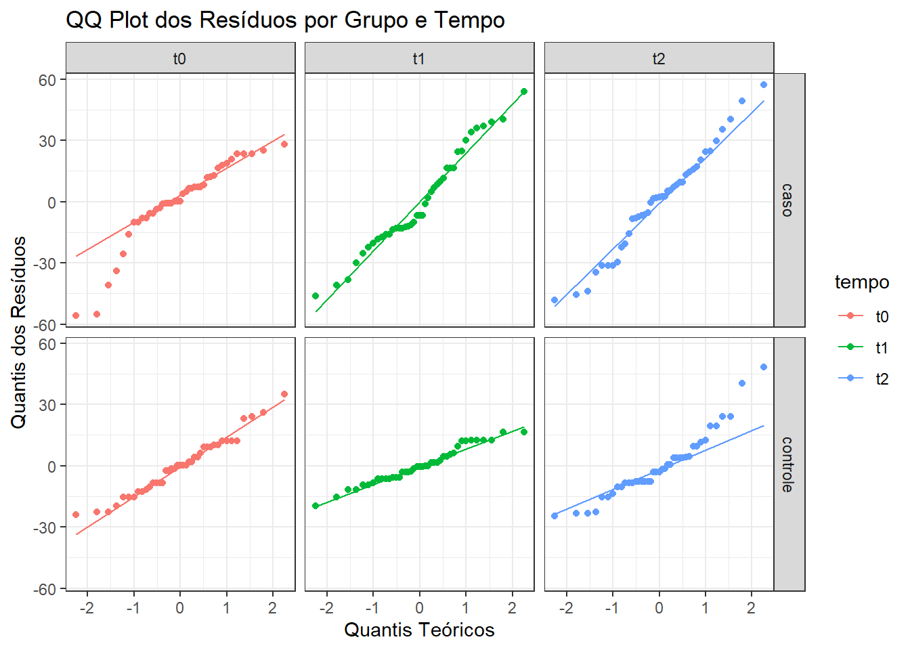
Os resultados indicam que, embora a maioria dos subgrupos apresente distribuição aproximadamente normal dos resíduos (p > 0,05), foram observadas violações pontuais nos tempos t0 do grupo “caso” (p = 0,00096) e t2 do grupo “controle” (p = 0,0126). Os Q-Q plots confirmaram essas distorções com leve curvatura nas caudas. Apesar dessas exceções, os resíduos apresentaram comportamento adequado na maioria das condições avaliadas. Considerando o tamanho amostral (n = 41, por grupo) e a robustez dos modelos mistos frente a desvios moderados da normalidade, entende-se que os pressupostos foram suficientemente atendidos para a validade da análise.
16.4.3.4 Pesquisa de outliers nos residuos
A presença de outliers serão analisados, usando função identify_outliers() do pacote rstatix e através de boxplots.
dadosL_bi %>%
dplyr::group_by(grupo, tempo) %>%
rstatix::identify_outliers(residuos)# A tibble: 8 × 8
grupo tempo id escores residuos ajustados is.outlier is.extreme
<chr> <fct> <fct> <dbl> <dbl> <dbl> <lgl> <lgl>
1 caso t0 13 150 -55.2 205. TRUE FALSE
2 caso t0 20 120 -33.9 154. TRUE FALSE
3 caso t0 26 110 -55.9 166. TRUE FALSE
4 caso t0 30 200 -40.8 241. TRUE FALSE
5 controle t2 47 300 24.1 276. TRUE FALSE
6 controle t2 48 300 24.1 276. TRUE FALSE
7 controle t2 77 280 40.3 240. TRUE FALSE
8 controle t2 78 300 48.2 252. TRUE TRUE Boxplots
ggpubr::ggboxplot (dadosL_bi,
bxp.errorbar = TRUE,
bxp.errorbar.width = 0.1,
x = "tempo",
y = "residuos",
color = "black",
fill = "grupo",
ylab = "Pico de Fluxo Expiratório (l/min)",
xlab = "Tempo",
outliers = TRUE,
ggtheme = theme_classic(),
legend = "top") +
theme (text = element_text (size = 12))
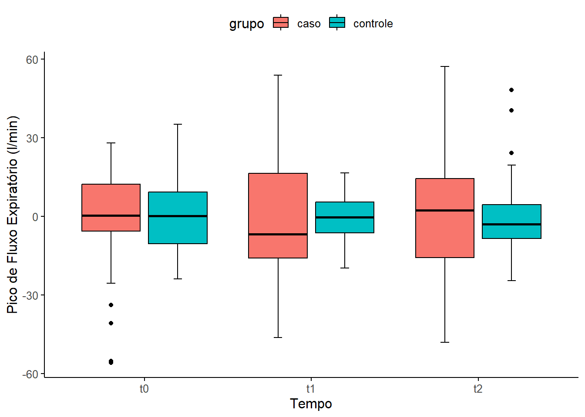
A análise dos resíduos do modelo ajustado por efeitos mistos (lme) identificou 8 observações como outliers (Figura 16.9), sendo uma classificada como outlier extremo (id = 78). Essas observações não comprometem os pressupostos da homocedasticidade e normalidade dos resíduos. Assim, não foi indicada a exclusão de dados, mantendo-se a integridade da amostra para fins analíticos.
16.4.3.4.1 Análise da influência dos outliers
Para análise de influência em modelos de efeitos mistos (lme), usa-se abordagens adaptadas, já que funções como cooks.distance() não são aplicáveis diretamente e necessitam de um modelo equivalente mais simples:
# Ajuste de modelo linear simples para o teste (sem efeitos aleatórios)
modelo_lm <- lm(escores ~ grupo * tempo, data = dadosL_bi)
# Distância de Cook
cooksD <- cooks.distance(modelo_lm)
# Alavancagem
leverage <- hatvalues(modelo_lm)Adicionar a distância de Cook e os valores da leverage (alavancagem) nos dadosL_bi:
dadosL_bi$cooksD <- cooksD
dadosL_bi$leverage <- leverageCriar uma variável com observações influentes:
dadosL_bi$is.influential <- dadosL_bi$cooksD > (4 / nrow(dadosL_bi))Visualizar em um gráfico , construído com o ggplot2:
ggplot(dadosL_bi,
aes(x = seq_along(cooksD), y = cooksD)) +
geom_bar(stat = "identity") +
geom_hline(yintercept = 4 / nrow(dadosL_bi),
linetype = "dashed", color = "red") +
labs(title = "Cook's Distance",
x = "Observação",
y = "Distância de Cook") +
theme_bw()
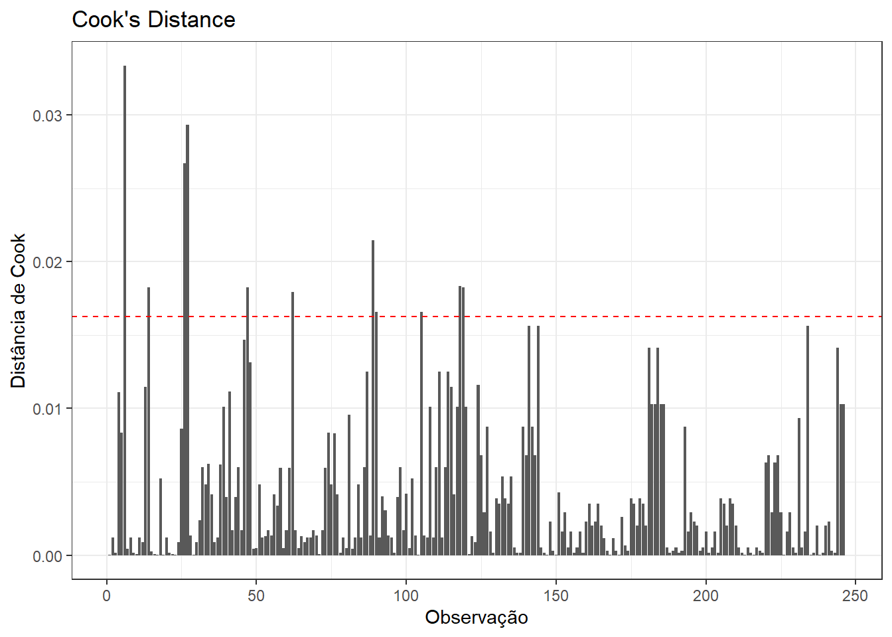
O gráfico da distância de Cook (Figura 16.10) mostra que a maioria das observações tem baixa influência (valores próximos de zero). Algumas observações ultrapassam a linha de corte (em vermelho), definida como 4/n (n = número de observações). No exemplo, o ponto de corte é \(4/246 \approx 0,016\), isto indica possível influência desproporcional no modelo. Entretanto, não há muitos pontos extremos, o que é um bom sinal. Após esse passo, deve-se identificar esses valores influentes e avaliá-los:
dadosL_bi %>% filter(is.influential) %>%
select(id, grupo, tempo, escores, cooksD, leverage)# A tibble: 11 × 6
id grupo tempo escores cooksD leverage
<fct> <chr> <fct> <dbl> <dbl> <dbl>
1 2 caso t2 100 0.0334 0.0244
2 5 caso t1 300 0.0182 0.0244
3 9 caso t1 320 0.0267 0.0244
4 9 caso t2 350 0.0293 0.0244
5 16 caso t1 300 0.0182 0.0244
6 21 caso t1 110 0.0179 0.0244
7 30 caso t1 308 0.0214 0.0244
8 30 caso t2 320 0.0166 0.0244
9 35 caso t2 320 0.0166 0.0244
10 40 caso t0 270 0.0183 0.0244
11 40 caso t1 300 0.0182 0.0244Foram identificados 11 observações influentes segundo a Distância de Cook, todas no grupo caso e com escores extremos (muito baixos ou muito altos). Os valores de Cook’s D estão acima do limiar (~0.016), mas ainda não são alarmantes (valores > 1 seriam muito preocupantes). Os leverage values (~0.0244) também são baixos, indicando que essas observações não têm posição incomum nos preditores, mas o valor da variável dependente (escore) é que impacta mais. Como esses valores não se constituem em um erro de digitação ou inconsistência nos escores de PEF, os valores serão mantidos. Essa abordagem não será demonstrada, pois já foi realizada pelo autor e as conclusões não mudam.
Script completo para para comparar os modelos.
# 1. Remover observações influentes
dadosL_sem_inf <- dadosL_bi %>%
filter(!is.influential)
# 2. Ajustar modelo com todos os dados
modelo_completo <- aov_car(
escores ~ grupo * tempo + Error(id/tempo),
data = dadosL_bi,
factorize = TRUE)
# 3. Ajustar modelo sem observações influentes
modelo_sem_inf <- aov_car(
escores ~ grupo * tempo + Error(id/tempo),
data = dadosL_sem_inf,
factorize = TRUE)
# 4. Comparar os resultados
summary(modelo_completo)
summary(modelo_sem_inf)16.4.3.5 Homoscedasticidade
A homoscedasticidade será avaliada por um gráfico de dispersão dos resíduos:
ggplot(dadosL_bi, aes(x = ajustados, y = residuos)) +
geom_point(alpha = 0.6) +
geom_hline(yintercept = 0, color = "red", linetype = "dashed") +
labs(
title = "Resíduos vs. Valores Ajustados",
x = "Valores Ajustados",
y = "Resíduos"
) +
theme_classic()
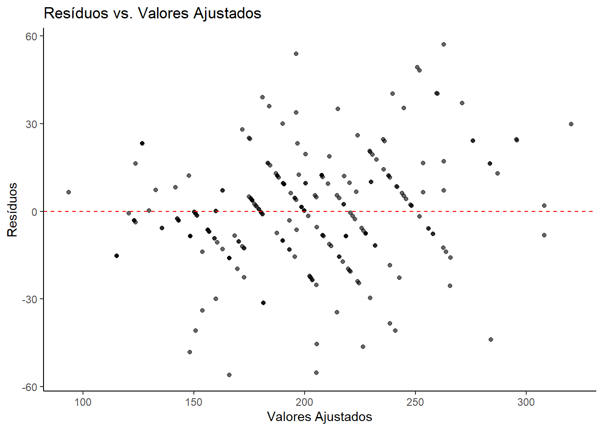
Observando a Figura 16.11 , verifica-se uma boa dispersão dos pontos ao redor da linha zero, sem padrão claro (como funil ou curva) e variação aproximadamente constante ao longo dos ajustados.
Portanto, não há evidências visuais fortes de violação da homocedasticidade. O pressuposto de variâncias constantes entre as combinações de grupo e tempo parece razoavelmente atendido.
O gráfico já atende o requisito para avaliar a homoscedasticidade, mas também é possível aplicar o teste de Breusch-Pagan, que precisa de um modelo ajustado com lm() (veja Seção 16.4.3.4.1). Como o modelo foi ajustado com a lme(), há necessidade de ajustar um modelo equivalente sem efeitos aleatórios, apenas para o teste:
bptest(modelo_lm)
studentized Breusch-Pagan test
data: modelo_lm
BP = 12.822, df = 5, p-value = 0.02511O valor p < 0.05 indica que há evidência de heteroscedasticidade — ou seja, a variância dos resíduos não é constante entre os grupos ou tempos. Isso viola o pressuposto de homoscedasticidade, que é importante para testes F na ANOVA clássica.
Como o modelo principal é uma ANOVA de medidas repetidas via aov_car() ou lme(), esses modelos já são mais robustos à heteroscedasticidade do que o lm() usado no teste.
Apesar da significância estatística, o efeito observado foi pequeno, e o uso de um modelo misto (lme), que acomoda estruturas de variância flexíveis, reduz a influência dessa violação sobre os resultados inferenciais.
16.4.3.6 Resumo da avaliação dos pressupostos
A adequação dos pressupostos foi avaliada para o modelo de ANOVA de medidas repetidas de dois fatores ajustado com a função aov_car() do pacote afex, considerando as variáveis grupo (caso, controle) e tempo (t0, t1, t2), com medidas repetidas por sujeito (id).
1. Normalidade dos resíduos:
A normalidade foi verificada por meio do teste de Shapiro-Wilk para os resíduos intra-sujeitos em cada combinação de grupo e tempo. Alguns desvios foram observados, com valores p < 0.05 para casos em t0 e controles em t2, sugerindo violação da normalidade em partes dos dados. Ainda assim, os resíduos em geral apresentaram distribuição aproximadamente simétrica nos gráficos Q-Q , sendo a violação considerada moderada. Como a ANOVA é relativamente robusta a desvios da normalidade, especialmente em amostras maiores, o modelo foi mantido.
2. Outliers:
Foram detectadas 8 observações outliers com base nos resíduos do modelo ajustado com lme(). Uma dessas foi classificada como extremo, e todas associadas a valores de escores distantes da média esperada. Adicionalmente, a análise de influência (Cook’s Distance) identificou 11 observações influentes, principalmente no grupo caso, indicando possível impacto em estimativas do modelo.
A comparação entre os modelos com e sem essas observações revelou que a exclusão dos influentes não alterou as conclusões principais: o efeito de tempo permaneceu altamente significativo (p < 0.001), o efeito de grupo não foi significativo (p > 0.46), e a interação grupo × tempo continuou significativa (p < 0.001), embora com leve redução no F. Isso sugere que o modelo é estável e robusto, mesmo na presença de influências pontuais.
3. Esfericidade:
A esfericidade, pressuposto fundamental em ANOVA com medidas repetidas, foi avaliada com o teste de Mauchly, que não indicou violação para tempo nem para a interação grupo × tempo (p > 0.19). As correções de Greenhouse-Geisser e Huynh-Feldt foram consistentes, mantendo a significância dos efeitos, o que reforça a confiabilidade da análise.
4. Homoscedasticidade:
A homogeneidade de variâncias foi avaliada graficamente e formalmente via teste de Breusch-Pagan em modelo lm paralelo, retornando p = 0.025, o que indica heterocedasticidade leve. Essa violação reforça a importância de validar os resultados com modelos mistos (lme), que lidam melhor com esse tipo de estrutura de erro.
Conclusão:
Apesar de desvios pontuais nos pressupostos (normalidade, homoscedasticidade), o modelo demonstrou consistência estatística e robustez analítica. A remoção de observações influentes não alterou os resultados principais, fortalecendo a confiança nas conclusões. A abordagem adotada, que incluiu modelos alternativos e verificação cuidadosa de resíduos, garante a validade da inferência realizada com a ANOVA de medidas repetidas.
16.4.4 Testes post hoc
Considerando que a interação grupo:tempo foi significativa (ver @sec-anova2model), se justifica explorar as diferenças dentro e entre grupos ao longo do tempo.
Embora de tanto o modelo construído com aov_car(), do pacote afex, quanto o modelo com lme(), do pacote nlme, possam ser utilizados para ajustar modelos de ANOVA de medidas repetidas, a opção para os pós testes, será será pelo uso do lme(), assim como realizado com os resíduos. Existem alguns motivos para isso:
Nos pós-testes, será usado o pacote
emmeanse ele funciona melhor com olme(), pois reconhece muito bem o modelo misto e permite pós-testes com estrutura correta (por exemplo, comparações dentro de sujeitos);Facilidade para extrair resíduos, valores ajustados, influências etc. A
aov_car()encapsula o modelo de forma menos transparente (resultado mais voltado ao relatório da ANOVA – tipo III, teste de Mauchly, GG/HF, etc.). Comlme(), se tem acesso direto ao modelo e seus componentes.Mais controle da estrutura de correlação (caso se precise modelar estruturas mais complexas de medidas repetidas).
16.4.4.1 Comparações entre níveis de tempo dentro de cada grupo
Para entender como os escores mudam ao longo do tempo em casos e controles separadamente, recomenda-se:
emmeans_tempo_dentro_grupo <- emmeans(modelo_lme, ~ tempo | grupo)
contrastes_tempo_dentro <- contrast(emmeans_tempo_dentro_grupo,
method = "pairwise",
adjust = "tukey")
summary(contrastes_tempo_dentro)grupo = caso:
contrast estimate SE df t.ratio p.value
t0 - t1 -30.2 4.98 160 -6.067 <.0001
t0 - t2 -54.6 4.98 160 -10.977 <.0001
t1 - t2 -24.4 4.98 160 -4.910 <.0001
grupo = controle:
contrast estimate SE df t.ratio p.value
t0 - t1 -7.8 4.98 160 -1.568 0.2625
t0 - t2 -27.8 4.98 160 -5.586 <.0001
t1 - t2 -20.0 4.98 160 -4.018 0.0003
Degrees-of-freedom method: containment
P value adjustment: tukey method for comparing a family of 3 estimates A saída mostra que, no grupo caso, houve diferenças significativas entre todos os tempos. Isso sugere que o PFE aumentou progressivamente ao longo do tempo no grupo que recebeu o novo corticoide inalatório. No grupo controle , o padrão indica que a melhora foi mais tardia (apenas entre t1 e t~2), possivelmente refletindo um efeito menor ou mais lento do medicamento.
16.4.4.2 Comparações entre os grupos dentro de cada tempo
Para entender se há diferença entre casos e controles em t0, t1, t2:
emmeans_grupo_dentro_tempo <- emmeans(modelo_lme, ~ grupo | tempo)
contrastes_grupo_dentro <- contrast(emmeans_grupo_dentro_tempo,
method = "pairwise",
adjust = "tukey")
summary(contrastes_grupo_dentro)tempo = t0:
contrast estimate SE df t.ratio p.value
caso - controle -9.51 10.2 80 -0.933 0.3537
tempo = t1:
contrast estimate SE df t.ratio p.value
caso - controle 12.88 10.2 80 1.263 0.2103
tempo = t2:
contrast estimate SE df t.ratio p.value
caso - controle 17.32 10.2 80 1.698 0.0933
Degrees-of-freedom method: containment Em nenhum dos tempos a diferença entre os grupos foi estatisticamente significativa. Apesar de t2 mostrar tendência de diferença (p = 0.0933), não alcança significância convencional estabelecida de 0,05. Ainda assim, pode ter relevância clínica, dependendo do contexto.
Os resultados reforçam o achado da interação significativa entre grupo e tempo na ANOVA. O grupo “caso” apresentou evolução mais consistente ao longo das avaliações, enquanto o grupo “controle” teve melhora mais discreta e tardia. A ausência de diferenças entre os grupos em cada tempo sugere que os efeitos se acumulam ao longo do tempo, mais visivelmente nos tratados (casos).
16.4.5 Relatando os resultados da ANOVA de medidas repetidas de dois fatores
O resultado pode ser relatado da seguinte forma:
- Uma ANOVA de medidas repetidas de dois fatores foi conduzida para avaliar o efeito de um novo corticosteroide inalatório em crianças asmáticas, com idades entre 7 e 15 anos, sobre os escores de Pico de Fluxo Expiratório (PFE), ao longo de três momentos (t0, t1, t2).
- Observou-se uma interação estatisticamente significativa entre grupo e tempo no escore de PFE, F(2, 160) = 8,34, p < 0,00036. Em função dessa interação, as comparações foram realizadas separadamente dentro de cada grupo. Os valores de p foram ajustados pelo método de Bonferroni
- Grupo caso: houve diferenças significativas entre todos os tempos (t0 vs. t1: p < 0,0001; t0 vs. t2: p < 0,0001; t1 vs. t2: p < 0,0001), indicando melhora progressiva.
- Grupo controle: não houve diferença significativa entre t0 e t1 (p = 0,265), mas houve entre t0 e t2 (p < 0,0001) e entre t1 e t2 (p = 0,0003), sugerindo um efeito mais tardio.
- As comparações entre grupos dentro de cada tempo não revelaram diferenças estatisticamente significativas (p > 0,05 em todos os casos), embora uma tendência tenha sido observada em t2 (p = 0,0933), sem atingir significância convencional.
Recomenda-se acompanhar as conclusões com um gráfico (Figura 16.12).
# Ajuste de um modelo com rstatix::anova_test()
mod <- dadosL_bi %>%
rstatix::anova_test(dv = escores,
wid = id,
within = tempo,
between = grupo,
type = 3)
get_anova_table(mod) ANOVA Table (type III tests)
Effect DFn DFd F p p<.05 ges
1 grupo 1 80 0.544 4.63e-01 0.006
2 tempo 2 160 68.725 2.86e-22 * 0.120
3 grupo:tempo 2 160 8.348 3.56e-04 * 0.016# Comparações por pares (pwc)
pwc <- dadosL_bi %>%
dplyr::group_by(tempo) %>%
pairwise_t_test(escores ~ grupo,
paired = TRUE,
p.adjust.method = "bonferroni")
pwc# A tibble: 3 × 11
tempo .y. group1 group2 n1 n2 statistic df p p.adj p.adj.signif
* <fct> <chr> <chr> <chr> <int> <int> <dbl> <dbl> <dbl> <dbl> <chr>
1 t0 esco… caso contr… 41 41 -1.04 40 0.305 0.305 ns
2 t1 esco… caso contr… 41 41 1.27 40 0.212 0.212 ns
3 t2 esco… caso contr… 41 41 1.68 40 0.101 0.101 ns # Valores p e posição no eixo y
pvalores <- dadosL_bi %>%
group_by(tempo) %>%
pairwise_t_test(escores ~ grupo,
paired = TRUE,
p.adjust.method = "bonferroni") %>%
mutate(y.position = 250)
# Gráfico final
ggplot(dadosL_bi,
aes(x = tempo,
y = escores,
color = grupo,
group = grupo)) +
stat_summary(fun = mean,
geom = "line",
linewidth = 0.8,
linetype = "dashed",
position = position_dodge(0.3)) +
stat_summary(fun.data = mean_cl_normal,
geom = "errorbar",
width = 0.2,
position = position_dodge(0.3)) +
stat_summary(fun = mean,
geom = "point",
size = 2,
color = "black",
position = position_dodge(0.3)) +
geom_text(data = pvalores,
aes(x = tempo,
y = y.position,
label = paste0("p = ", signif(p, 3))),
inherit.aes = FALSE, size = 4) +
labs(x = "Tempo",
y = "Pico de Fluxo Expiratório (l/min)",
title = "Evolução dos escores por grupo",
subtitle = get_test_label(mod, detailed = TRUE),
caption = get_pwc_label(pwc)) +
theme_classic(base_size = 13) +
theme(legend.position = "right")
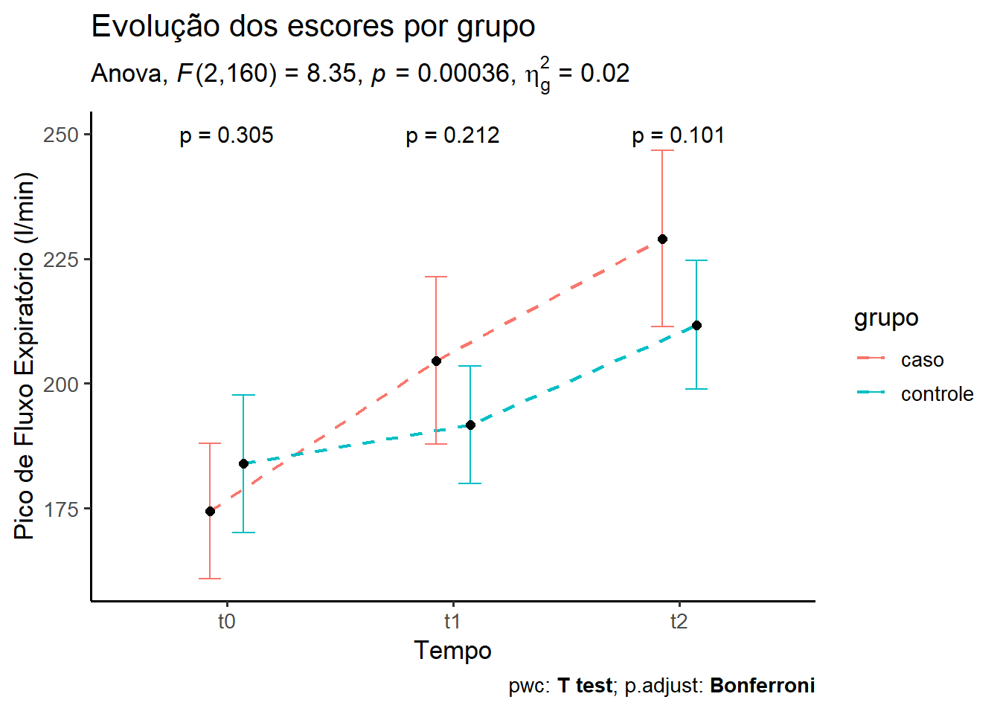
Veja a Seção 14.3.1.1 para mais detalhes da função↩︎
Objeto da classe “afex_aov”.↩︎